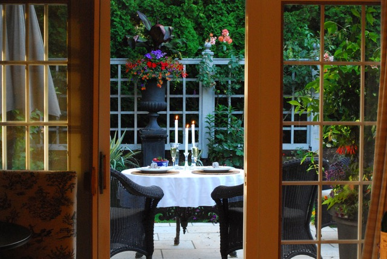

How to Create a Garden for Entertaining
Adding pops of color to your outdoors is the first step in creating a beautiful space for entertaining.
The color can be a variety of flowers or pieces of garden art. Whatever speaks to you will add to the surrounding beauty.
Use linen tableclothes and napkins to create a relaxed atmosphere. Candles or overhead string-lights will add to the ombience.
Most importantly, welcome your guests with an apertif cocktail or a glass of champagne the moment they
walk through your doors.
